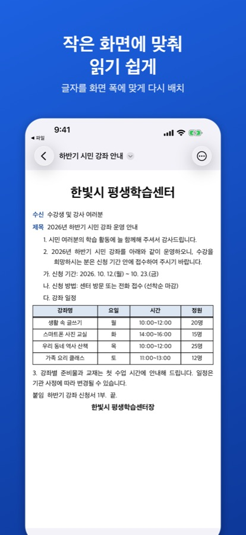

카카오톡으로 받은 한글 파일, 아이폰에서 열기
왜 내용이 안 보이나요?
iPhone에는 한글 문서(.hwp, .hwpx)를 여는 기능이 기본으로 들어 있지 않습니다. 그래서 학교·학원·회사 단체방에서 받은 한글 파일을 눌러도 내용 대신 파일 이름만 보이는 경우가 많습니다. 한글 문서를 읽는 앱을 설치하면 카카오톡의 공유 메뉴에서 바로 열 수 있습니다.
문서 보기·찾기·PDF 저장·인쇄는 무료입니다. 양식 저장(한글 파일로 저장, 서명 넣은 PDF·쪽 이미지)과 PDF·사진 변환은 각각 3번까지 무료이고, 계속 쓰려면 평생 이용권을 한 번 구입합니다(2026년 10월 한국 App Store 기준 4,400원, 구독 아님).
여는 순서
- 카카오톡 대화방에서 한글 파일을 눌러 받습니다.
- 공유(내보내기) 버튼을 누릅니다.
- 앱 목록에서 ‘HWP 뷰어’를 고릅니다. 목록에 없으면 앱 아이콘 줄 맨 끝의 ‘더 보기’에서 찾습니다.
- 문서가 쪽 모양 그대로 열립니다.
파일을 먼저 파일 앱에 저장해 두었다면, HWP 뷰어를 열고 ‘둘러보기’에서 그 파일을 골라도 됩니다. 설치 뒤에는 파일 앱에서 한글 파일을 누르기만 해도 미리보기로 내용이 보입니다.


작은 화면에서 읽기 쉽게
문서 화면 오른쪽 위 ‘더 보기’(…) 메뉴 맨 위의 ‘화면에 맞춰 보기’를 누르면 글자가 화면 폭에 맞게 다시 배치되어 확대하지 않고 읽을 수 있습니다. 원래 종이 모양으로 돌아가려면 같은 자리의 ‘쪽 모양으로 보기’를 누릅니다. 긴 문서에서 낱말을 찾으려면 ‘더 보기 › 찾기’, 귀로 들으려면 ‘더 보기 › 소리로 듣기’를 씁니다.
카카오톡으로 다시 보내기
받는 사람의 환경에 맞춰 세 가지 방법 중 하나를 고르세요. 모두 ‘더 보기’ 메뉴에 있고, 이어서 열리는 공유 화면에서 ‘카카오톡’을 고른 뒤 대화방을 선택하면 됩니다.
PDF로 보내기
‘PDF로 저장·공유’를 누르면 화면에 보이는 쪽 모양 그대로 PDF가 만들어집니다. 받는 사람이 한글 프로그램이 없어도 대부분의 기기에서 열어 볼 수 있습니다. 무료입니다.
그림(쪽 이미지)으로 보내기
‘쪽 이미지로 공유’를 누르면 쪽마다 PNG 그림이 만들어집니다(최대 30쪽). 대화방에서 파일을 따로 열지 않고 사진처럼 바로 볼 수 있어 짧은 안내문을 다시 전달할 때 편합니다. 서명을 넣은 문서가 아니면 무료입니다.
원본 파일 그대로 보내기
‘원본 파일 공유’를 누르면 받은 한글 파일을 바꾸지 않고 그대로 전달합니다.
회신서처럼 빈칸을 채워 보내야 하는 문서라면 가정통신문 회신서 작성·서명해서 보내기를 보세요.
자주 묻는 질문
문서가 서버로 올라가나요?
아닙니다. HWP 뷰어는 문서를 기기 안에서만 읽고 표시합니다. 계정·서버·광고가 없습니다.
원본과 조금 다르게 보여요.
글꼴 차이로 줄 바꿈 위치가 달라지거나 글 둘레 배치 같은 일부 효과가 단순하게 보일 수 있습니다. 계약서처럼 중요한 문서는 PC에서도 최종 확인하세요.
암호가 걸린 문서도 열리나요?
암호가 걸린 문서는 열 수 없습니다.
함께 온 워드·엑셀·PDF 파일은요?
같은 방법으로 ‘HWP 뷰어’를 고르면 보기 전용으로 열립니다. 한글 파일과 함께 받은 워드·엑셀·PDF 보기를 참고하세요.